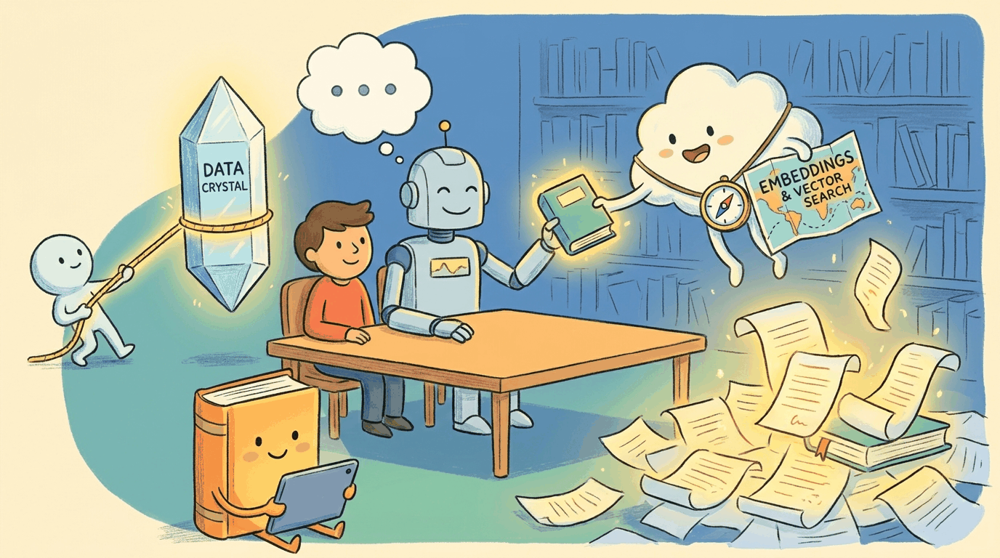

"The only true wisdom is in knowing you know nothing."
Socrates
Part Overview
Part V addresses a critical limitation of LLMs: they can only use knowledge baked into their weights at training time. You will learn to create embeddings, build vector databases, implement Retrieval-Augmented Generation (RAG) systems that ground LLM responses in real data, and assemble complete conversational AI systems with memory, context management, and multi-turn dialogue.
Chapters: 3 (Chapters 19 through 21). Builds on the model understanding from Part II and the practical API skills from Part III. Feeds directly into the agent systems covered in Part VI.
LLMs are powerful but limited to what they learned during training. Part V shows you how to ground models in live, external knowledge through embeddings, vector search, and RAG, then assemble those pieces into complete conversational AI systems with memory and multi-turn reasoning.
From text to vectors: embedding models, similarity metrics, vector database architectures (FAISS, ChromaDB, Qdrant, Pinecone, pgvector), indexing strategies, and building semantic search systems.
Complete RAG pipeline design: chunking strategies, retrieval methods, reranking, context assembly, advanced patterns (multi-hop, corrective RAG, GraphRAG), and production RAG evaluation.
- 19.1 RAG Architecture & Fundamentals
- 19.2 Advanced RAG Techniques
- 19.3 RAG with Knowledge Graphs
- 19.4 Deep Research & Agentic RAG
- 19.5 Structured Data & Text-to-SQL
- 19.6 RAG Frameworks & Orchestration
- 19.7 GraphRAG: Knowledge Graph-Augmented Retrieval
- 19.8 RAG Ingestion Pipelines and Connectors
- 19.9 Source Attribution and Citation in RAG
Complete dialogue systems: conversation management, memory architectures, multi-turn context handling, persona design, safety filters, and building production chatbots and assistants.
What Comes Next
Continue to Part VI: Agentic AI. Once your LLM can retrieve and converse, the next step is autonomous action: equipping models with tools, building multi-agent systems, and ensuring safety and reliability in production agent deployments.